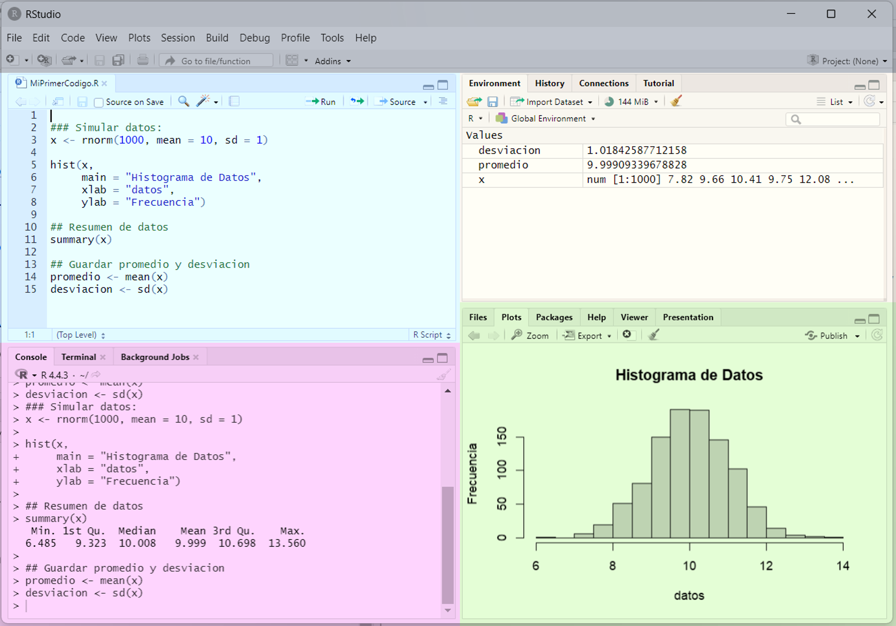

EPG3308: Computación Estadística
Clase 01: Introducción a R
Profesor: Hernán Robledo Araya (harobledo@uc.cl)
Ayudante: Josefa Silva Muñoz (josefa.silva@alumni.uc.cl)
Primer Semestre - 2025
¡Bienvenidos al Magíster en Estadística!
¡Y al Curso de Computación Estadística!
EPG3308 Computación Estadística
Hernán Robledo Araya
Josefa Silva Muñoz
¿Computación Estadística?
Aprender a utilizar un Programa para realizar Análisis Estadísticos.
Metodología de Aprendizaje
- Asistir a clases.
- Participar de las actividades en clases para practicar.
- Prepararse para rendir laboratorios con mínimo apoyo.
- Realizar tareas desde la casa con todo el material disponible.
Computación
Estadística
En Estadística,
- Recolectamos datos
- Organizamos datos
- Analizamos datos
- Interpretamos datos
- Inferimos sobre los fenómenos
¿Para qué?
Tomar Decisiones
¡Necesitamos un programa para hacer todo esto!


En este curso veremos:

R es un Lenguaje de Programación diseñado específicamente para análisis estadístico.
Glosario de Programación
Programación: Acción y efecto de programar.
Programar: Proceso de crear instrucciones para un computador de modo que este ejecute las instrucciones establecidas.
Lenguaje de Programación: dialecto específico utilizado para programar.
- En Chile se habla español, como en R se habla en lenguaje… ¡R!
- El lienzo donde el programador escribe sus instrucciones es denominado Código o Script.
Sintaxis: son las reglas del lenguaje de programación sobre cómo estructurar las palabras de este lenguaje para que sea funcional.
Dinámica de Programación
- Humano escribe código,
- Humano entrega código al programa (R en este caso),
- Programa ejecuta las instrucciones correctamente.
- Humano es feliz üòÅ
- Programa ejecuta las instrucciones correctamente.
- Humano entrega código al programa (R en este caso),
Dinámica Realista de Programación
- Humano escribe código,
- Humano entrega código al programa,
- Programa lo rechaza por contener errores de escritura,
- Humano entrega código corregido,
- Programa vuelve a rechazar ,
- Humano entrega código corregido,
- Programa vuelve a rechazar ,
- Humano entrega código corregido,
- Programa vuelve a rechazar ,
- Humano entrega código corregido,
- Programa vuelve a rechazar ,
- Humano entrega código corregido,
- Programa vuelve a rechazar ,
- Humano entrega código corregido,
- Programa vuelve a rechazar ,
- Humano entrega código corregido,
- Programa lo rechaza por contener errores de escritura,
- Humano entrega código al programa,
Ejemplo de un código en R
¿Qué hará este código?
¿Por qué usar R?
- Es gratis.
- Liviano y disponible en múltiples plataformas.
- Flexibilidad para construir procesos complejos.
- Rápido y eficiente en ejecutar sus tareas.
- Programa de Código abierto.
- Herramientas básicas y avanzadas para manipulación de datos.
- Herramientas básicas y avanzadas para estadística.
- Comunidad construye nuevas librerías.
- Poderosas herramientas gráficas.
¿Cómo se aprende a programar en u otro lenguaje?
- Aprendiendo la sintaxis y el dialecto del lenguaje de programación.
- Familiarizándonos resolviendo tareas sencillas.
- Resolviendo problemas interesantes.
- ¡Equivocándonos mil y un veces!
Corregir los errores enseña más que cien cursos
Hoy aprender a programar es más fácil que nunca


¿Por qué usar R y no Python, o Julia, u otro lenguaje?
- Python requiere librerías extras para algunos procedimientos estadísticos básicos.
- R dispone de métodos estadísticos avanzados:
- Modelos Lineales Generalizados
- Análisis de Series de Tiempo
- Métodos Bayesianos
Nota
Python o Julia siguen siendo excelentes opciones para estadística clásica.
Instalar
Escoger el repositorio chileno para descargar R.
- Tras la descarga, instalar programa dejando opciones por defecto.
- En macOS, el procedimiento es equivalente.
- Para abrir R, ingresar R 4.3 en el buscador.
Interfaz Gráfica mejorada para R


Página Web         Página Web



¡Actividad Bonificada!
- Instale R y R Studio.
- Desde R Studio, crear un nuevo código y guardarlo bajo algún nombre en alguna carpeta.
- Dentro del código creado, escriba comentarios anteponiendo cada una con un símbolo #.
# !Esto es un comentario!
##### ¡Esto tambien es un comentario!
# Copiar desde el boton en la esqina superior derecha de este cuadro.- Escriba en el código lo que ha aprendido durante esta sesión y aquello que le causa curiosidad del curso.
- Guarde el archivo y subir a Actividad Bonificada 1 en la sección de Tareas de Canvas.
EPG3308: Computación Estadística
Clase 02: Uso de R Básico
Profesor: Hernán Robledo Araya (harobledo@uc.cl)
Ayudante: Josefa Silva Muñoz (josefa.silva@alumni.uc.cl)
Primer Semestre - 2025
¿Cómo se aprende a programar en u otro lenguaje?
- Aprendiendo la sintaxis y el dialecto del lenguaje de programación.
- Familiarizándonos resolviendo tareas sencillas.
- Resolviendo problemas interesantes.
- ¡Equivocándonos mil y un veces!
Como ejecutar código en R
- Atajo del Teclado: Control + Enter
- Para código escrito en Consola tan solo presionar Enter.
R La Calculadora
R como Calculadora
Suma con + y Resta con -
R como Calculadora
Multiplicación y División
Potencias y Raíces
R como Calculadora
- El orden en que se aplican las operaciones sigue las reglas de la matemática.
- Usar paréntesis
()para agrupar sus operaciones y salir de duda.
- Usar paréntesis
- Orden:
- Paréntesis
- Exponenciación y raíces
- Multiplicación y división (de izquierda a derecha)
- Suma y resta
R como Calculadora
- El orden en que se aplican las operaciones sigue las reglas de la matemática.
- Usar paréntesis
()para agrupar sus operaciones y salir de duda.
- Usar paréntesis
R como Calculadora
- El orden en que se aplican las operaciones sigue las reglas de la matemática.
- Usar paréntesis
()para agrupar sus operaciones y salir de duda.
- Usar paréntesis
¡Actividad de Cinco Minutos!
- Transforme a grados Farenheit los 26 grados Celsius pronosticados para mañana.
\[F = 32 + C \times \frac{9}{5}\] 2. Si usted obtuvo un promedio de notas de laboratorios de \(3.5\), un promedio de tareas de \(4.2\), y un examen de \(4.5\), ¿aprueba el curso?
¡Actividad de Cinco Minutos!
- Sea \(p\) el puntaje obtenido en una evaluación que tiene \(p_{max}\) puntos como máximo. La nota que un estudiante obtiene bajo cualquier porcentaje de exigencia \(Ex\) se calcula como sigue:
Si se obtiene un puntaje \(p < E\cdot p_{max}\), \[\text{Nota} = 1 + 3\cdot\frac{1}{Ex}\cdot\frac{p}{p_{max}}.\]
Mientras que si se obtiene un puntaje \(p \geq E \cdot p_{max}\), \[\text{Nota} = 4 + 3\cdot\frac{p - Ex \cdot p_{max}}{p_{max}\cdot ( 1- Ex)}.\]
¿Qué nota obtuvo usted si obtuvo 25 puntos en una prueba de 30 puntos como máximo bajo una exigencia del 80%?
¡Actividad de Cinco Minutos!
- (para conocedores de funciones y condicionales) Construya una función que entregue la nota obtenida en una evaluación tras recibir como argumentos el puntaje obtenido, el puntaje total de la evaluación, y el porcentaje de exigencia.
- Explore las escalas de notas bajo el 50%, 60%, y 70%.
Fuente: J. Pumarino
Texto en R
Escribir e Imprimir Texto en Consola
Sintaxis para texto
- Todo carácter que deseen utilizarse como texto se escribe entre comillas dobles o entre comillas simples.
- Texto así no tiene mayor uso.
- Comunicar a un lector de código a través de comentario:
Impresión de texto en consola
- Función
cat(): concatena texto e imprime en la consola.catde concatena.
Error in parse(text = input): <text>:1:8: unexpected symbol
1: cat(No se
^- Notar que
\nhace un salto de línea. - Notar que puede recibir una operación e imprime el resultado.
cat() es una función.
- Internamente ejecuta un procedimiento que puede depender o no de los elementos entregados por el usuario.
- Argumentos de una función: lo que debe recibir para que una función funcione.
Función print(x): si x es texto, (sólo) lo imprime. Si x es otro objeto, imprime los atributos definidos a ser impresos.
- Es menos flexible que
catpara manipular texto.
Función paste(x, y,...): pega los textos x y y separándolos por un espacio.
- Similar a
cat, perocatsólo imprime y devuelve texto impreso.
¡Actividad de Cinco Minutos!
- Usando
cat, concatene en una única frase el siguiente poema de Pablo Neruda:
Punto
No hay espacio más ancho que el dolor,
no hay universo como aquel que sangra.
- En un único
caty con todo el poema en un único texto, use\npara que al imprimir el poema en la consola se haga un salto de línea tras la coma del poema. Observe qué ocurre si usaprintpara imprimir el mismo texto.
¡Actividad de Cinco Minutos!
- En un único
caty con todo el poema en un único texto, use\npara que al imprimir el poema en la consola se haga un salto de línea tras cada salto incluido por el poeta.
Océano
Cuerpo más puro que una ola,
sal que lava la línea,
y el ave lúcida
volando sin raíces.
Creando Objetos en R
- Definir cantidades que puedan ser operadas posteriormente en el código.
- Sintaxis:
Nombre <- Elemento Almacenado como "Nombre"
[1] -25900- Objeto
FondosTotalesrecibió cambios (ficticios) y tiene nuevo valor.
Se puede usar
=en vez de<-pero puede llevar a confusiones.Definir objetos mejora la legibilidad del código.
Acerca nombres para objetos:
No pueden tener espacios dentro del nombre. Ej:
mi objeto <- 5No pueden llevar ciertos carácteres especiales. Ej:
valor$ <- 5,valor& <- 5No pueden iniciar con un número. ej:
1objeto <- 5Se recomienda no usar palabras reservadas para otras funciones u otros objetos. Ej:
print <- 5
¡Nombres de los objetos son sensible a mayúsculas y otras puntuaciones!
Valor <- 1000
TEXTO <- "Esto es un texto!"
datos_2 <- mtcars # Tabla de Datos guardada en R.
lstas <- list()
secuencias <- c(10, 400, 200, 500)
print(valor)Error: objeto 'valor' no encontradoError: objeto 'texto' no encontradoError: objeto 'datos2' no encontradoError: objeto 'listas' no encontradoError: objeto 'secuencia' no encontradoBuenas prácticas para asignación de nombres
- Usar nombres descriptivos.
- Usar patrones coherentes en el código.
- Añadir contexto si hace falta.
Funciones en R
Funciones: bloque de código que posee un nombre asignado y realiza una tarea específica.

- Usualmente recibe de entrada elementos que definen el proceso a realizar.
- Los Argumentos de la función son estos objetos.
- Puede o no entregar un objeto de salida.
Sintaxis para crear funciones
Sintaxis para crear funciones
NombreFuncion <- function(Argumento1, Argumento2, ...){
## No dar ningun argumento tambien es opcion.
## Aqui dentro se escriben todo el procedimiento
## que se desea ejecutar cuando NombreFuncion es llamada.
## Si se desea que la funcion retorne un
## objeto tras su ejecucion:
return(Objeto)
## Tambien es opcion que no entregue nada.
}Considere la función
Funcion(Argumento, X_Y, Z).Suponga, para este caso, que para que la función funcione, los tres argumentos deben recibir valores numéricos.
Cualquiera de las siguientes opciones son sintaxis válidas en R:
Ejemplos:
Ejemplos:
- Función que transforma grados Celsius a Farenheit.
[1] "0 grados Celsius son 32 grados Farenheit."[1] "30 grados Celsius son 86 grados Farenheit."[1] "100 grados Celsius son 212 grados Farenheit."[1] "220 grados Celsius son 428 grados Farenheit."Ejemplos:
- Funcion que calcula el promedio entre los cuatro laboratorios de este curso.
¡Actividad Bonificada!
Construya una función que reciba de argumentos las notas de la Tarea 1 y 2 y entregue como salida el mensaje Promedio de Laboratorios = NOTA OBTENIDA.
Construya una funcion que reciba de argumentos las notas de los laboratorios 1, 2, 3, y 4, las tareas 1 y 2, y el examen, y que calcule la nota final del curso. La nota final debe entregarla junto a un mensaje acorde.
Muestre evidencia de que realizó el resto de actividades de esta clase.
- Basta responder hasta aquí para haber completado la actividad bonificada.
. . .
Continúa….
¡Actividad Bonificada!
Escriba una función que tome como argumentos una nota y un porcentaje de exigencia, y que devuelva la nota ajustada a un nuevo porcentaje de exigencia, asumiendo que la nota original corresponde a un 50% de exigencia.
Escriba una función que reciba tantos argumentos como evaluaciones haya en el curso, además de un porcentaje de exigencia. La función deberá recalcular la nota final del curso ajustándola al porcentaje de exigencia indicado, asumiendo que las evaluaciones originales corresponden a un 50% de exigencia.
Estructura de Datos en R
- Sabemos añadir un único elemento a un objeto
- Quisiéramos añadir múltiples elementos a un único objeto.
Vectores de Datos
- Función
c()(combine) para crear y guardar un vector:
Nombre <- c(Elemento1, Elemen2, Elem3, ...)
- Ejemplo:
- Es posible asignarle un nombre a los elementos del vector:
- Si un vector trae sólo números, R lo identificará como un vector numérico:
Funciones útiles de R para crear vectores:
a:b: crea secuencia de números enteros desdeahastab.
seq(from, to, by, ...): crea secuencia numérica desdefromhastatodando saltos de segúnby.
Funciones útiles de R para crear vectores:
rep(x, times, length.out, each): repite el o los valoresxdependiendo de si se entregatimes,length.out, oeach.times: repitexun númerotimesde veces.
rep(x, times, length.out, each):
each: repite cada elemento dexun númeroeachde veces.
length.out: repitexhasta que vector sea de largolength.out.
Ayuda de R
help(funcion) - ?funcion
Estructura de Documentación de Ayuda
EPG3308: Computación Estadística
Clase 03: Estructura de Datos
Profesor: Hernán Robledo Araya (harobledo@uc.cl)
Ayudante: Josefa Silva Muñoz (josefa.silva@alumni.uc.cl)
Primer Semestre - 2025
Hoy veremos:
- Operaciones con Vectores
- Matrices y Operaciones con Matrices
- Listas y Operaciones con Matrices
- Cuadros de Datos (Data Frames)
- Lectura de Datos
1. Vectores de Datos
- Función
c()(combine) para crear y guardar un vector:
Nombre <- c(Elemento1, Elemen2, Elem3, ...)
- Funciones:
seqyrep.
Veremos:
- Acceder a elementos
- Funciones para vectores
- Matemática Vectorizada
- Cálculos Matemáticos
Acceso a elementos de vector con
vector[posicion]:Acceder a un único elemento:
[1] 4[1] 4.5- Acceder a múltiples elementos: vector de índices.
- Acceso a elementos de vector con
vector[posicion]:
- Todos excepto un elemento:
vector[-posicion]
[1] 4.5 4.7 5.2 6.0 7.0[1] 4.0 4.5 4.7 5.2 6.0- Acceder a todos excepto un subconjunto:
Modificar o añadir elementos de un vector
vector[indices] <- vector2
Funciones útiles:
length(vector): entrega el numero de elementos contando NAs.sort(vector): ordena los elementos del vector.rank(vector): entrega el ranking de los elementos según su valor.rev(vector): invierte el orden de los elementos del vector.unique(vector): entrega un vector en que se eliminan los valores repetidos devector.table(vector): tabla de frecuencia de los elementos devector.
Tip
Tip: Cuando necesiten hacer algo específico pregúntense:
¿existe una función que ya lo haga?
Matemática con Vectores:
Sumas, restas, productos, divisiones, potencias y otras operaciones sí funcionan entre vectores.
Operación entre Vector y Escalar
Esta cualidad de R es llamada Cálculos Vectorizados.
Más eficientes que recorrer cada elemento, aplicar la operación deseada, y continuar con el siguiente elemento.
mivector <- c(4.8, 5.3, 3.8, 6.1, 3.9, 4.4, 2.6, 1.8, 0.4, 0.5)
## Funcion que eleva al cuadrado cada elemento de un vector
vectoralcuadrado <- function(){
resultado <- c()
for(i in 1:10){
resultado[i] <- mivector[i]^2
}
return(resultado)
}
## Comparacion en nanosegundos de tiempos de computo entre
## calculo vectorizado y escalar
microbenchmark::microbenchmark(mivector^2, vectoralcuadrado(), times = 1000)Reciclaje de elementos:
- Cuando se aplica una operación entre vectores de distintos tamaños, R comienza a reciclar elementos del vector más corto.
Advertencia
Preferir no reciclar. Operar con vectores de igual tamaño.
Matemática con Vectores
sum(vector): Calcula la suma de todos los elementos.prod(vector): Calcula el producto de todos los elementos.mean(vector): Calcula el promedio entre los elementos.median(vector): Encuentra la mediana de los elementos.var(vector): Calcula la varianza del vector.sd(vector): Calcula la desviación estándar.summary(vector): calcula múltiples estadísticas descriptivas.min(vector): Encuentra el valor mínimo.max(vector): Encuentra el valor máximo.quartile(vector, prob): entrega el cuartil que acumulaprobdel vector dado.
¡Actividad de Diez Minutos!
El archivo DataC03.RData se carga con el comando load("DataC03.RData") y contiene tres vectores con información de una muestra de estudiantes y sus puntajes en una prueba de competencias matemáticas. Los vectores tienen los nombres edad, comuna y puntuacion.
Corrija el registro de la posición 97 en edad. Cree un nuevo cetor llamado
edad2. ¿Habrá otro valor mal codificado?Siguiendo las recomendaciones de asignaciones de nombres a objetos, cree tres vectores con las edades de los estudiantes y tres vectores con las puntuaciones, agrupados por comuna.
¡Actividad de Diez Minutos!
Calcule estadísticas descriptivas (promedio, mediana, desviación estándar, mínimo y máximo) de las edades de los estudiantes agrupadas por comuna.
Calcule estadísticas descriptivas (promedio, mediana, desviación estándar, mínimo y máximo) de las puntuaciones obtenidas por los estudiantes agrupadas por comuna.
2. Matrices
- Arreglo bidimensional (tienen filas y columnas) de datos.
\[ \begin{pmatrix} 3 & 17 & 8 & 12 \\ 15 & 4 & 22 & 7 \\ 9 & 6 & 13 & 19 \\ \end{pmatrix} \]
- Usadas en matemáticas (y estadística) para formalizar cálculos de múltiples números.
Note
Un vector es una matriz de una única columna.
2. Matrices
matrix(vector, nrow, ncol, byrow): crea una función en base a vector con nrow filas, ncol columnas, y rellenada por filas o columnas según byrow.
\[ \begin{pmatrix} 3 & 17 \\ 15 & 4 \\ \end{pmatrix} \]
2. Matrices
Ejemplo 1:
Ejemplo 2:
- Nombre para filas o columnas:
row.namesycol.names
¡Actividad de Cinco Minutos!
Utilice los datos del archivo Data03.RData para hacer lo siguiente:
Crear una matriz de dos columnas usando la función
matrixque contenga los datos de los vectoresedadypuntuacion. Coloque nombres adecuados a las columnas de la matriz.Crear una matriz de tres columnas usando la función
cbindque contenga los datos de los vectoresedad,comuna, ypuntuacion. Coloque nombres adecuados a las columnas de la matriz. ¿Qué se observa en la matriz resultante?
Matemática elemental con matrices
- Igual que con vectores, se pueden aplicar las operaciones matemáticas elementales entre matrices.
Funciones por columnas o filas con matrices
colSums(matriz): Sumar datos por cada columna.rowSums(matriz): Sumar datos por fila columna.colMeans(matriz): Promediar datos por cada columna.rowMeans(matriz): Promediar datos por cada fila.apply: Aplicar una función cualquier por fila o columnas.
apply(matriz, fila_o_columna, funcion)
Funciones por columnas o filas con matrices
apply(matriz, fila_o_columna, funcion_a_aplicar)
Acceder a elementos de matrices
matriz[filas, columnas]- Misma idea que con vectores.
- Ejemplos:
Funciones útiles para matrices
dim(matriz): entrega el número de filas y columnas de una matriz.nrow(matriz)yncol(matriz): lo mismo que la función anterior.diag(matriz): entrega un vector con los elementos ubicados en la diagonal de la matriz.
¡Actividad Bonificada!
El archivo Clase03_notas.RData contiene una matriz con las notas de los estudiantes de cierto curso.
- Calcule el promedio de las evaluaciones para cada estudiante.
- Calcule para cada evaluación el promedio de notas.
- Calcule mínimo, máximo, y desviación estándar de las notas de cada evaluación.
- Muestre evidencia de haber realizado el resto de actividades de la clase.
Listas
Colección de elementos de distinta naturaleza (numérico, texto, tablas, etc.)
Crear lista con
list()Acceder a los elementos con
Lista[[ elemento ]]Si elementos tienen nombres, pueden ser llamados con
Lista$Nombre.
3. Listas
- Acceder a elementos de la lista:
3. Listas
- Añadir elemento a la lista:
[1] 1 1 1 1- Se pueden combinar elementos de cualquier naturaleza.
speed dist
1 4 2
2 4 10
3 7 4
4 7 22
5 8 16
6 9 10
7 10 18
8 10 26
9 10 34
10 11 17
11 11 28
12 12 14
13 12 20
14 12 24
15 12 28
16 13 26
17 13 34
18 13 34
19 13 46
20 14 26
21 14 36
22 14 60
23 14 80
24 15 20
25 15 26
26 15 54
27 16 32
28 16 40
29 17 32
30 17 40
31 17 50
32 18 42
33 18 56
34 18 76
35 18 84
36 19 36
37 19 46
38 19 68
39 20 32
40 20 48
41 20 52
42 20 56
43 20 64
44 22 66
45 23 54
46 24 70
47 24 92
48 24 93
49 24 120
50 25 853. Listas
lapply(Lista, Funcion)para aplicar una función a los elementos de una lista.
4. Data Frames
- Matrices que combinan columnas de distintas naturalezas.
- Comparte sintaxis de listas para acceder a columnas.
4. Data Frames
- Acceder a clases de cada columna con
str(structure):
'data.frame': 150 obs. of 5 variables:
$ Sepal.Length: num 5.1 4.9 4.7 4.6 5 5.4 4.6 5 4.4 4.9 ...
$ Sepal.Width : num 3.5 3 3.2 3.1 3.6 3.9 3.4 3.4 2.9 3.1 ...
$ Petal.Length: num 1.4 1.4 1.3 1.5 1.4 1.7 1.4 1.5 1.4 1.5 ...
$ Petal.Width : num 0.2 0.2 0.2 0.2 0.2 0.4 0.3 0.2 0.2 0.1 ...
$ Species : Factor w/ 3 levels "setosa","versicolor",..: 1 1 1 1 1 1 1 1 1 1 ...- Acceder a variables con sintaxis
tabla$variable
5. Lectura de Datos
Archivos
.RDatase leen conload("archivo.RData").Otros archivos: asistente de carga de datos.
5. Lectura de Datos
From Text (readr)para archivos .txt y .csv.
5. Lectura de Datos
Tip
Copiar código de carga y pegarlo en el script.
5. Lectura de Datos
EPG3308: Computación Estadística
Clase 04: Operaciones Lógicas y Control de Flujo
Profesor: Hernán Robledo Araya (harobledo@uc.cl)
Ayudante: Josefa Silva Muñoz (josefa.silva@alumni.uc.cl)
Primer Semestre - 2025
Operaciones Lógicas
Comuna Edad puntuacion
1 La Florida 13 49.2
2 La Florida 14 100.0
3 Macul 13 20.0
4 La Florida 14 57.6
5 La Florida 15 93.6
6 La Florida 14 79.2- ¿Cómo filtramos esta tabla según los estudiantes de
La Florida?
Operación Lógica
base$Comuna == "La Florida"
- Operador lógico
==evalúa qué elementos debase$Comunason iguales aLa Florida.
Observaciones
TRUEyFALSEse pueden abreviar comoTyF.R interpreta
TRUEyFALSEcomo un valor 1 y 0.
[1] 0[1] 3[1] 0.6- Vector de valores 0 y 1 a
TRUEyFALSE
Operadores Lógicos más comunes de R
| Operador | Descripción |
|---|---|
== |
Igual a. Devuelve TRUE si ambos operandos son iguales. |
!= |
Diferente de. Devuelve TRUE si los operandos son distintos. |
> |
Mayor que. Devuelve TRUE si el operando de la izquierda es mayor. |
< |
Menor que. Devuelve TRUE si el operando de la izquierda es menor. |
>= |
Devuelve TRUE si el operando de la izquierda es mayor o igual. |
<= |
Devuelve TRUE si el operando de la izquierda es menor o igual. |
& |
AND lógico. Devuelve TRUE si ambos operandos son TRUE en cada posición. |
| |
OR lógico. Devuelve TRUE si al menos uno de los operandos es TRUE en cada posición. |
! |
Negación lógica. Devuelve TRUE si el operando es FALSE, y viceversa. |
Ejemplos
- Operador
==y!=
¡Advertencia!
A pesar de que teóricamente dos números sean iguales, ¡¡computacionalmente pueden no serlo!!
\[(\sqrt{2})^2 = 2\]
Error de Redondeo
Casos comunes de Errores de Redondeo
- Uso de números irracionales
¿Por qué pasa esto?
- Ciertos números (como 0.1 o 1/3) no tienen representación exacta en código binario.
- No se pueden registrar los infinitos números decimales de un número irracional en un computador.
Solución
Comparar números según una tolerancia.
\[\text{Si } |a - b| < \text{Tolerancia} \quad \Rightarrow \quad a \approx b \]
- Operadores
>,<,>=,<=.
¿Cómo evaluar que se cumplan múltiples condiciones?
Operador &
Condicion1 & Condicion2
¿Cómo evaluar que se cumplan al menos una condición?
Operador |
Condicion1 | Condicion2
Negación Lógica con !
- Suponer filtramos datos tales que
Comuna == "San Joaquin" & Edad >= 14
Comuna Edad puntuacion
11 San Joaquin 14 25
15 San Joaquin 14 38
31 San Joaquin 14 50
52 San Joaquin 14 88- ¿Cómo filtramos por todos excepto los casos anteriores?
- Negando la condición
!(Comuna == "San Joaquin" & Edad >= 14)
- Operador
!invierte todos losTRUEyFALSE:
¿Qué buscan realizar estas operaciones?
14 < Edad & Edad < 16
!(14 < Edad & Edad < 16)
!(Comuna == "San Joaquin" & Comuna == "Macul")
Funciones útiles
which(vector_logico): entrega las posiciones en que se encuentran losTRUE.
which.min(numeros)ywhich.max(numeros): da posición del menor y mayor valor, respectivamente.
Funciones útiles
- Operador
vec1 %in% vec2: evalúa si los elementos devec1se encuentran envec2.
[1] FALSE FALSE TRUE TRUEall(cond1, cond2, ...): entregaTRUEsi todas las condiciones se cumplen yFALSEsi no.any(cond1, cond2, ...): entregaTRUEsi al menos una de las condiciones se cumplen yFALSEsi no.all.equal(x,y): evalúa si dos objetos son idénticos o no (incluye grado de tolerancia).
Actidad de Práctica
Cargue en R la tabla del archivo pokemon.csv.
Filtre la tabla según las filas que cumplan
type1 == "water"usandotabla[tabla$type1 == "water,].Filtre la tabla según las filas que cumplan
type1 == "fire".Filtre la tabla según las filas que cumplan
type1 == "fire"ytype2 == "flying".Filtre la tabla según las filas que cumplan
type1 == "fire"otype1 == "water".
Control de Flujo
- Considere la siguiente situación:
- Si un estudiante viene de la comuna de San Joaquín, recibirá una prueba de 20 preguntas.
- Si un estudiante viene de otra comuna, recibirá una prueba de 30 preguntas.
- Queremos una función que de el número de preguntas según la comuna.
Control de Flujo: if-else
if(condicion a evaluar){
# Código evaluado si se cumple condición
}else{
# Código evaluado si NO se cumple condición
}Control de Flujo: if-else
Ejemplo: calculadora de notas según exigencia.
\[ \text{Nota} = \begin{cases} 1 + 3\frac{p}{Ex\cdot p_{max}}, & \text{si } p < Ex\cdot p_{max}, \\ 4 + 3\frac{p - Ex \cdot p_{max}}{p_{max}(1 - Ex)}, & \text{si } p \geq Ex\cdot p_{max}. \end{cases} \]
Observaciones
- Dentro de la condición del
ifpuede venir cualquier operación lógica de interés.
if(comuna == "A" & edad > 50 & ptje == 10 & ...)
- Si se desean ejecutar más de dos casos usar
else if():
Bucles for
Permiten recorrer cada elemento de un vector y realizar una acción con cada uno de ellos.
- Realizar procedimientos repetitivos.
Sintaxis:
Ejemplos
- Imprimir cada elemento de un vector:
- Aplicar operación matemática a cada elemento:
- Lo más común es usar vector de índices:
- Notación simplificada:
Importante
Usar for cuando no haya una función vectorizada en R que haga lo mismo, o cuando necesite hacer muchos cálculos dentro de cada iteración.
Cálculos vectorizados son siempre más rápidos
- Sumar con
forvs sumar con funciónsum:
Aplicación combinando if-else y for
Calcular nota de alumnos donde la exigencia cambia según comuna:
San Joaquín: 50% exigencia
Macul: 60% exigencia
La Florida: 65% exigencia
Solución:
Notas <- c()
for(i in 1:nrow(base)){
if(base$Comuna[i] == "San Joaquin"){
Notas[i] <- NotaEPG3308(p = base$puntuacion[i],
pMax = 100,
Ex = 0.50)
}else if(base$Comuna[i] == "Macul"){
Notas[i] <- NotaEPG3308(p = base$puntuacion[i],
pMax = 100,
Ex = 0.60)
}else{
Notas[i] <- NotaEPG3308(p = base$puntuacion[i],
pMax = 100,
Ex = 0.65)
}
}Bucle while
- Estructura que ejecuta un bloque de código de forma repetitiva mientras una condición sea verdadera.
Ejemplos:
- Sumar números hasta que la suma sea mayor a 100.
- Validar la respueta de un usuario:
¡Actividad Bonificada!
Resuelva cada caso utilizando procedimientos vectorizados y utilizando control de flujo (if-else y/o for)
Construya una función que reciba un vector de notas e imprima un mensaje indicando si alguien obtuvo una nota 7.0 o no.
Usando el archivo
Clase03_notas.Ry las notas calculadas previamente, escriba un código que recorra el vector de notas e imprima un mensaje para cada una, según estos casos:
- Si Nota < 4.0 \(\rightarrow\) “No se exime de examen”.
- Si Nota está entre 4.0 y 6.0 \(\rightarrow\) “Posible eximición examen”.
- Si Nota > 6.0 4.0 \(\rightarrow\) “Eximido de examen”.